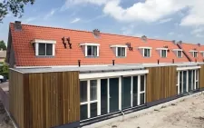
Woningrenovatie
Renovatie van woningen met zo min mogelijk overlast voor de bewoners. Daarom veel aandacht voor voorbereiding en communicatie.
- Kozijnen en daken vervangen
- Vloer- en spouwisolatie
- Dakkapellen en zonnepanelen
Totaalaanbieder van advisering, onderhoud, renovatie en nieuwbouw. Voor woningcorporaties, VvE's, vastgoedbeheerders, beleggers en particulieren.

Renovatie van woningen met zo min mogelijk overlast voor de bewoners. Daarom veel aandacht voor voorbereiding en communicatie.
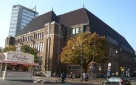
Renovatie van winkels en kantoren, adequaat en flexibel, zodat eigenaar en gebruikers snel verder kunnen.
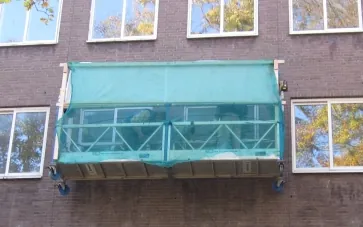
Complete gevelrenovaties, met het bouwplaatsmaterieel in eigen beheer.
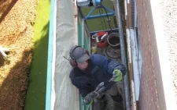
Klein dagelijks onderhoud, van een kapotte dakpan tot een lekkage. Bij calamiteiten 24 uur per dag bereikbaar via de storingsdienst.
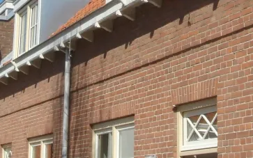
Onderhoud tussen het einde van het gebruik en de nieuwe ingebruikname. Meestal onbewoond, soms bewoond, en dan met zo min mogelijk overlast.
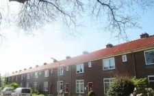
Onderhoud aan de binnen- en buitenschil volgens een vooropgezet plan, tot het vastgoed weer op het gewenste kwaliteitsniveau is.
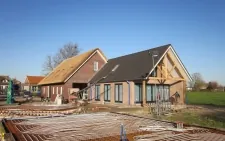
Een uitbouw, een opbouw of een complete nieuwe woning, binnen budget en planning. Ook voor particulieren.
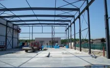
Nieuwe bedrijfsgebouwen, afgestemd op de eisen van de opdrachtgever. Voor onder andere particuliere beleggers en vastgoedeigenaren.
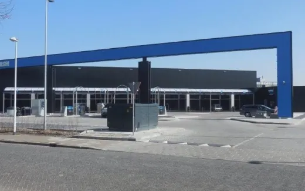
Alle bouwkundige onderdelen van een tankstation. Vaak als hoofdaannemer, soms als onderaannemer van een installateur of civiel aannemer.
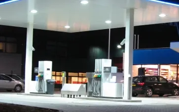
Het complete bouwkundige pakket voor luifels, van betonfundering tot lichtstraat.
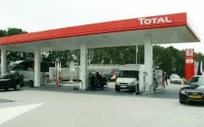
Het hele jaar door onderhoud aan tankstations door het hele land, met jaarlijkse inspecties. Gebreken worden waar mogelijk direct verholpen.
Woningen, een winkel, een bedrijfshal of een tankstation: vertel kort wat er moet gebeuren.